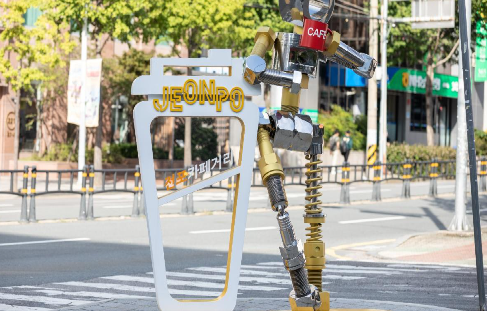
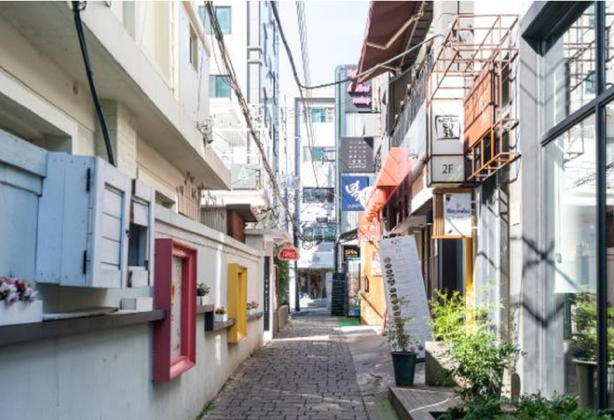
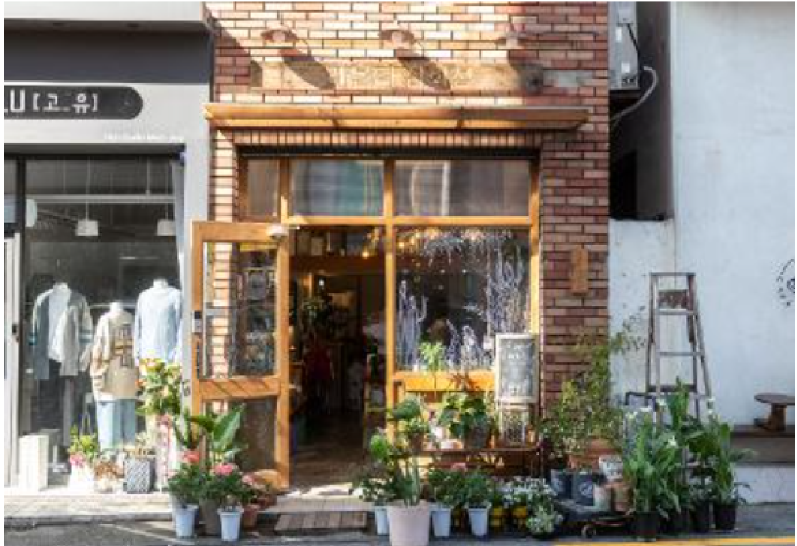

전포카페거리
- 전포카페거리
- 전포카페거리의 매력은 숨어있는 크고 작은 골목마다 저마다의 또 다른 세상을 만들고 있다는 점이다.
골목마다 카페는 물론, 다양한 세계 요리를 맛볼 수 있는 식당들도 있다. 평범해 보이는 골목으로 들어설 때 마다
만나게 되는 각양각색의 간판을 보노라면 무엇을 먹어봐야 아쉽지 않을지, 결정하기 어려운 고민에 빠질 수밖에.

전포카페거리
- 전포카페거리
- 전포카페거리를 따라 쭉 올라가다보면 큰 도로가 하나 있고,
그 도로를 건너서 올라가면 여기서 부터가 ‘전리단길’이다. 길 하나 차이지만 여기는 또 분위기가 다르다.
전포카페거리가 백화점 같은 느낌이라면, 이곳은 좀 더 ‘커피 전문 거리’ 같은 느낌이 든다.
감성적인 인테리어의 카페와 함께 나란히 서있는 낡은 공구점 건물들. 그 속에서 뒤섞이는 깡깡하며
기계 고치는 소리와 드르르륵 커피 내리는 소리가 과거와 현재를 이어주는 묘한 연결고리로 다가온다.

전포카페거리
- 전포카페거리
- 전포카페거리와 전리단길의 매력은 그렇게 넓지 않은 거리 안에서 굉장히 다양한 경험을 할 수 있는 점이다.
커피, 디저트는 물론 다양한 종류의 음식과 각종 옷가게와 소품점들이 우리를 가깝지만 낯선 세상으로 데려다준다.
수많은 카페들도 저마다 다른 모습으로 우리를 기다리고 있다. 넓고 좁고, 낮고 높고, 현대적이고 빈티지하고.
그리고 해가 지면 저마다의 조명으로 새로운 모습이 되어 우리를 맞이한다.
